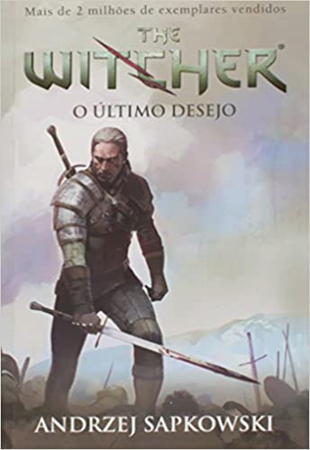
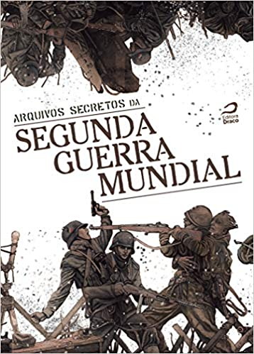
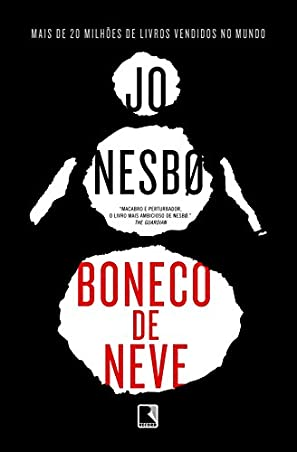
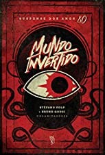
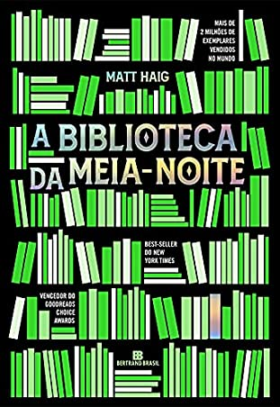

O ladrão de casaca enfrenta o maior detetive de todos os tempos.
A coleção que inspira a série original da Netflix “Lupin”.
Arsène Lupin é o ladrão de casaca mais famoso e admirado que o mundo já conheceu. Genial e sedutor, ele
age de acordo com suas próprias leis, mas sempre obedecendo a um código de honra cavalheiresco. Nesse
volume, o segundo da série, Lupin trava um inesquecível duelo com seu arquirrival, o detetive inglês
Herlock Sholmes, em duas histórias mirabolantes e muito divertidas: "A Mulher Loura" e "A lâmpada
judaica". Levará a melhor quem for mais rápido - no poder de raciocínio e dedução ou, se necessário, com
os punhos.
Essa aventura de um dos personagens mais clássicos da literatura policial traz o texto integral em
primorosa tradução de André Telles e Rodrigo Lacerda - vencedores do Prêmio Jabuti -, apresentação e
cronologia de vida e obra do autor. A versão impressa apresenta ainda capa dura e acabamento de luxo.

O Último Desejo - The Witcher: Volume 1
Mais informações
Geralt de Rívia é um bruxo sagaz e habilidoso. Um assassino impiedoso e de sangue-frio treinado, desde a
infância, para caçar e eliminar monstros. Seu único objetivo: destruir as criaturas do mal que assolam o
mundo. Um mundo fantástico criado por Sapkowski com claras influências da mitologia eslava. Um mundo em
que nem todos os que parecem monstros são maus nem todos os que parecem anjos são bons...

Arquivos Secretos Da Segunda Guerra Mundial
Arquivos Secretos Da Segunda Guerra Mundial
De 1939 a 1945, as grandes potências e a maioria das nações estavam organizadas em dois grupos: o Eixo e
os Aliados. Essa foi a maior guerra do século XX e seus números são impressionantes: mais de 100 milhões
de militares mobilizados, 30 países envolvidos, 50 a 80 milhões de mortos, duas bombas atômicas entre
muitos bombardeios, balas e vidas interrompidas. Tudo isso em seis anos e um dia.
Os horrores da guerra se contrastam à bravura de soldados que se empenharam no resgate de colegas,
salvamento de civis e enfrentamento aos inimigos. E nosso país participou em uma missão capitaneada pela
Força Expedicionária Brasileira (FEB) e pelos ases da Força Aérea Brasileira (FAB) na Europa. Com poucos
recursos, os brasileiros fizeram história ao ajudar os Aliados a derrotar nazistas e fascistas na
Itália. Esses fascinantes eventos inspiraram as narrativas fantásticas ou baseadas em fatos reais
reveladas em Arquivos Secretos da Segunda Guerra Mundial.
O general e editor Raphael Fernandes recrutou um grupo de soldados altamente treinados para a tarefa,
além de escrever um dos relatos. Entre o contingente dos roteiristas estão Celso Menezes, Antônio Tadeu,
Luís Carlos Sousa, Larissa Palmieri, Alexey Dodsworth, Rodrigo Ortiz Vinholo, Sarah L. Silva, Eduardo
Kasse e Rogério Faria. Já nos pilotos de nanquim, destacam-se os artistas: Ademir Leal, Chico Silvério,
Rodrigo Matos, Tito Camello, Gabriel Calfa, Flávio L. Maravilha, David Arievilo, Gabriela Nascimento,
Breno Fonseca (Kura), Danilo Dias e Laudo Ferreira. A medalha de honra pela capa foi para João Pirolla,
experiente ao retratar o horror em nossa trilogia das cores.
Vivencie o cotidiano dos brasileiros que foram enfrentar nazistas na Europa, participe da luta no front
de combate, presencie as consequências da máquina de guerra ou até mesmo mergulhe no lado espiritual e
oculto do conflito. Ouse sair vivo e lembre-se por que esse evento nunca mais deverá ser repetido pela
humanidade.

Boneco de neve
Mais informações
Considerado seu livro mais ambicioso pelo jornal inglês The Guardian e comparado a Silêncio dos
Inocentes, de Thomas Harris, pelo The Times, Boneco de neve é um livro arrepiante. No dia da primeira
neve do ano, na fria cidade de Oslo, o inspetor Harry Hole se depara com um psicopata cruel, que cria
suas próprias regras; O terror se espalha pela cidade, pois um boneco de neve no jardim pode ser um
aviso de que haverá uma próxima vítima. No caso mais desafiador da sua carreira, Hole se envolve em uma
trama complexa e mortal, com final surpreendente.

Mundo Invertido, antologia de suspense dos anos 80
Arquivos Secretos Da Segunda Guerra Mundial
Outros mundos existem e eles estão cheios de monstros...
O Mundo Invertido é uma dimensão paralela por onde caminha o Senhor dos Mundos, uma entidade que busca apenas uma coisa: causar medo. Ele atravessa as dimensões com seus tentáculos que abraçam tudo o que tocam. É um olho pulsante que está cansado de viver só, e por isso, Ele chegou, abrindo portas entre os multiversos, disseminando o terror. O Senhor dos Mundos está aqui.
Antologia de contos inspirada por suspenses dos anos 80.

A Biblioteca da Meia-Noite
Mais informações
A Biblioteca da Meia-Noite é um romance incrível que fala dos infinitos rumos que a vida pode tomar e da busca incessante pelo rumo certo.
Aos 35 anos, Nora Seed é uma mulher cheia de talentos e poucas conquistas. Arrependida das escolhas que fez no passado, ela vive se perguntando o que poderia ter acontecido caso tivesse vivido de maneira diferente. Após ser demitida e seu gato ser atropelado, Nora vê pouco sentido em sua existência e decide colocar um ponto final em tudo. Porém, quando se vê na Biblioteca da Meia-Noite, Nora ganha uma oportunidade única de viver todas as vidas que poderia ter vivido.
Neste lugar entre a vida e a morte, e graças à ajuda de uma velha amiga, Nora pode, finalmente, se mudar para a Austrália, reatar relacionamentos antigos – ou começar outros –, ser uma estrela do rock, uma glaciologista, uma nadadora olímpica... enfim, as opções são infinitas. Mas será que alguma dessas outras vidas é realmente melhor do que a que ela já tem?
Em A Biblioteca da Meia-Noite, Nora Seed se vê exatamente na situação pela qual todos gostaríamos de poder passar: voltar no tempo e desfazer algo de que nos arrependemos. Diante dessa possibilidade, Nora faz um mergulho interior viajando pelos livros da Biblioteca da Meia-Noite até entender o que é verdadeiramente importante na vida e o que faz, de fato, com que ela valha a pena ser vivida.
"Uma celebração entusiástica do poder que os livros têm de mudar vidas." – Sunday Times
"Um cenário de possibilidades ilimitadas, de novos caminhos trilhados, de novas vidas vividas, de um mundo totalmente diferente disponível para nós de alguma forma, em algum lugar, pode ser exatamente do que precisamos nesses tempos difíceis e turbulentos." – The New York Times
"Um romance extremamente original e instigante sobre a importância de valorizar a vida que você tem." – Independent
"Instigante e inspirador. Explora a nossa relação com o arrependimento e com o que realmente faz uma vida ser perfeita." – Harper's Bazaar
"Uma história sobre segundas chances e viver com arrependimentos. Muito envolvente." – Stylist
"Eu amei A Biblioteca da Meia-Noite. Ele condensa coisas importantes e tristes – morte, saúde mental, filosofia existencial – em um livro excepcional, prazeroso e de aquecer o coração." – Pandora Sykes